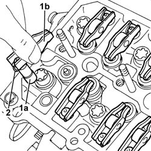

1036H55 Hydraulic tappet (one) - Replace with camshaft housing removed
- Path
- Procedures > 10 ENGINE > 1036 TIMING SYSTEM > 1036H TAPPETS AND ROCKER SHAFTS > 1036H55 Hydraulic tappet (one) - Replace with camshaft housing removed
- Kind
- repair procedure (removal / refitting; the operation number is the code)
- Applies to
- engines: 2.4 JTD 20V; all production periods
- Interactive page
- https://sloeber94.github.io/elrnDB-lThss/en/#/851176
Applies to: engines: 2.4 JTD 20V; all production periods
 Removing
Removing
 Refitting
Refitting1. Remove the hydraulic tappet assembly (1a) and rocker arms (1b).
2. Separate the hydraulic tappet from the rocker arm, removing the fastening clip.
- The hydraulic tappet automatically cancels the valve clearance whilst the engine is running. The cancelling of the valve clearance ensures that the start of the opening of each valve is at exactly the correct moment in the cycle.

Applies to: engines: 2.4 JTD 20V; all production periods
Refitting
Removing- Fit the new tappet in the rocker arm housing and fasten it using a new securing spring.
- Fit the tappet - rocker arm assembly in the housing in the cylinder head.